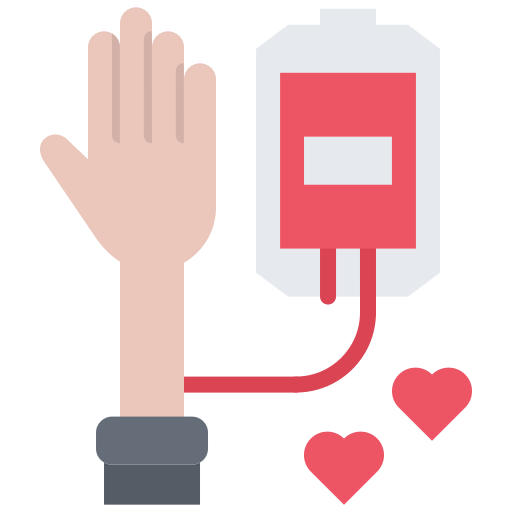

Nossa plataforma possui Hemocentros parceiros
Quer agendar uma coleta? Cadastre-se em nossa plataforma e visite a página de Hemocentros parceiros para realizar seu agendamento.
Sobre Nós

Quais são nossos objetivos?
Visando a dificuldade de algumas pessoas em obter informações acerca da doação de sangue criamos um site que junta todas as informações necessárias para doação e que facilite a conexão de doadores e centros!
Por qual motivo criamos o projeto?
É difícil encontrar dados na Internet no que diz respeito a quantas pessoas necessitam da doação de sangue no Brasil ou a quantas pessoas morrem pela falta dela. Isso mostra o quanto o país está atrasado e não apresenta recursos suficientes para tratar o problema, gerando um terreno fértil para nossa solução.